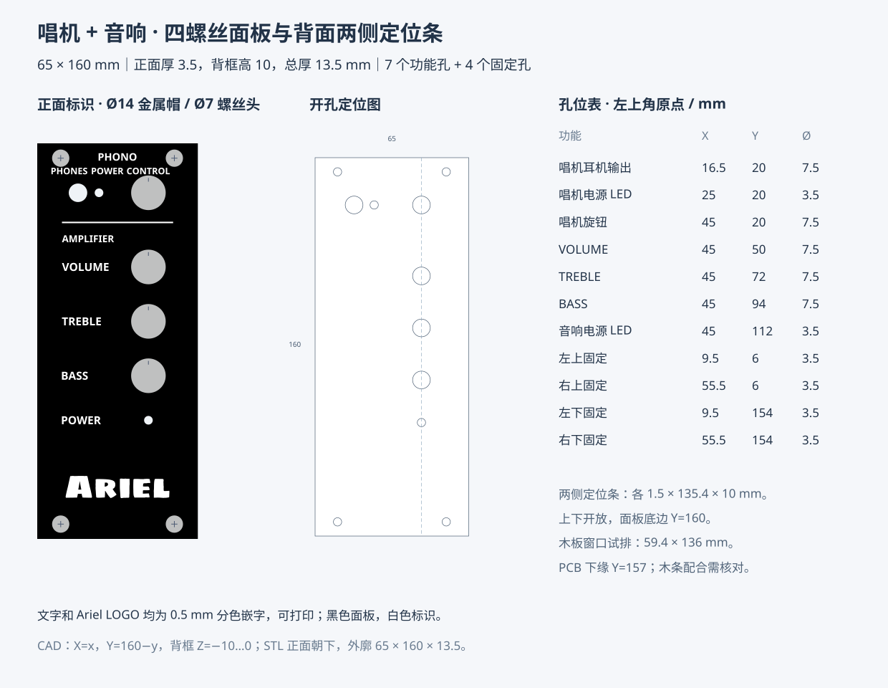

固定：背面两条定位条已移除，四颗正面螺丝负责夹紧。与厚 2 mm 的阶梯底板叠放，再安装到厚 10 mm 的木板上。固定孔 X=9.5/60.5、Y=6/164，通孔 Ø3.5 mm；螺杆 Ø3.2、头径 Ø7 mm。
打印：背面贴热床、正面朝上。黑色板厚 3.5 mm，白色文字／分隔线／三角标识／Ariel LOGO 凸起 0.4 mm，总厚 3.9 mm。0.2 mm 喷嘴、0.1 mm 层高，单调线顶面，顶层厚 0.8 mm，顶面速度 30 mm/s；关闭熨烫和支撑。白字作为同一对象的第二个零件保留在 Z=3.5～3.9 mm。
音响旋钮标识：三条左细右粗的白色三角条位于 X=55～66、中心 Y=50 / 72 / 94，长 11 mm、右端高 3 mm、凸起 0.4 mm；距 Ø14 mm 旋钮帽 3 mm，距面板右边 4 mm。
窗口：木板开孔保持 (2.8,12) 至 (62.2,148)，大小 59.4×136 mm。PCB 下缘 Y=157，木板窗口下边与 PCB 的实际深度配合仍需试装。底板窗口下边为 Y=158，底部横边高 12 mm，孔中心上下各留 6 mm，Ø7 螺丝头上下各留 2.5 mm。